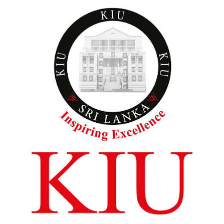

KIU (KAATSU INTERNATIONAL UNIVERSITY)
(PREMIER PRIVATE HIGHER EDUCATION INSTITUTION IN SRI LANKA)

HISTORY OF KIU (PRIVATE CAMPUS)
- 2015: Established as a non-state, degree-awarding higher education institute in Battaramulla, Sri Lanka.
- 2016: Recognized officially by the Ministry of Higher Education and UGC to award recognized bachelor's degrees.
- 2018: Launched specialized health science, nursing, and biomedical programs to address regional workforce needs.
- Present: Grown into a modern private university campus offering accredited undergraduate and postgraduate degrees.
AVAILABLE FACULTIES (PRIVATE DEGREE PROGRAMS)
- Faculty of Nursing – ශ්රූශ්රූෂක (නර්සින්) පීඨය
- Faculty of Health Sciences – සෞඛ්ය විද්යා පීඨය
- Faculty of Management – කළමනාකරණ පීඨය
- Faculty of Computer Science & ERP – පරිගණක විද්යා පීඨය
- Faculty of Education & Languages – අධ්යාපන හා භාෂා පීඨය
- Faculty of Graduate Studies – පශ්චාත් උපාධි අධ්යයන පීඨය
GO TO OFFICIAL WEBSITE OF KIU (PRIVATE)
GO TO HOME PAGE